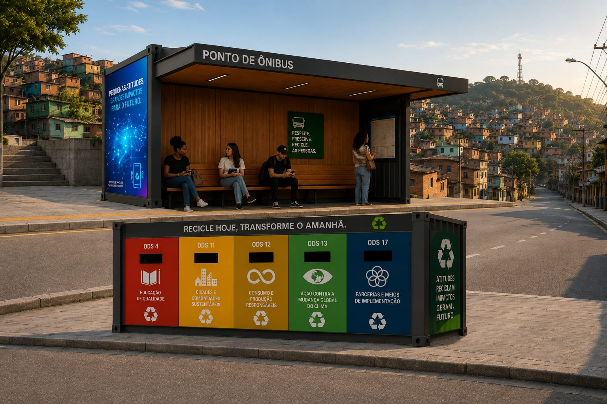
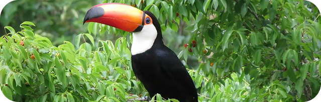

Educação Ambiental
Disponibilizamos conteúdos educativos, campanhas e desafios que promovem a conscientização ambiental de forma prática e acessível.
A EcoQuebrada nasceu com um propósito simples: mostrar que pequenas ações podem gerar grandes transformações. Acreditamos que a tecnologia, quando conectada às pessoas, é capaz de tornar bairros mais limpos, sustentáveis e conscientes.
Disponibilizamos conteúdos educativos, campanhas e desafios que promovem a conscientização ambiental de forma prática e acessível.
Integramos locais de coleta seletiva, espaços de conscientização e iniciativas sustentáveis para facilitar o descarte correto de resíduos.
Cada atitude sustentável gera pontos que podem ser trocados por benefícios em comércios parceiros, incentivando a reciclagem e boas práticas ambientais.


Promover a sustentabilidade por meio da tecnologia e da participação cidadã, incentivando o descarte correto de resíduos, fortalecendo a reciclagem e contribuindo para o desenvolvimento de comunidades mais conscientes e responsáveis.
Ser uma referência em soluções inteligentes para gestão de resíduos urbanos, conectando pessoas, empresas e governos em uma rede colaborativa capaz de transformar a realidade dos bairros brasileiros.